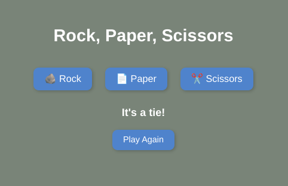
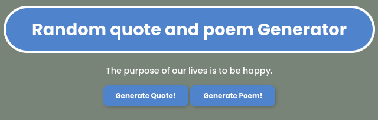
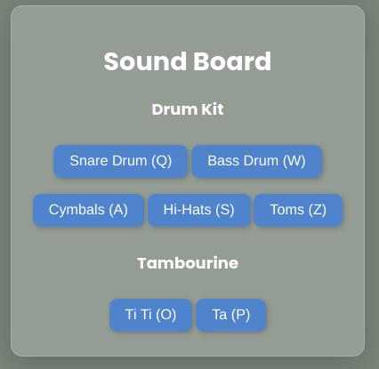

About Me
Hello! My name is Cyrus Galloso. I'm a junior in high school learning computer science. I've enjoyed learning a variety of different languages and applications, and this website shows some of my best work.
The Rock, Paper, Scissors, Game
This project was originally done on C++, but it was remade to work with HTML, CSS, and JS. It's very simple, you choose rock, paper, or scissors, and a computer randomly picks one too, and faces off against you. Click to try!
The Quote/Poem Generator
This project was different from the first. Instead of making a game, we made an easy to use quote and poem generator that gave some very wise words. Click to try!
The Drum Kit
This project was a step in a complete other direction because we implemented the use of audio. We made a drum kit, so users could click buttons on their keyboard, and start listening to a few drum sounds, complete with a tambourine. Click to try!
 Contact: 17656@husd.k12.ca.us, © 2025 Cyrus Galloso